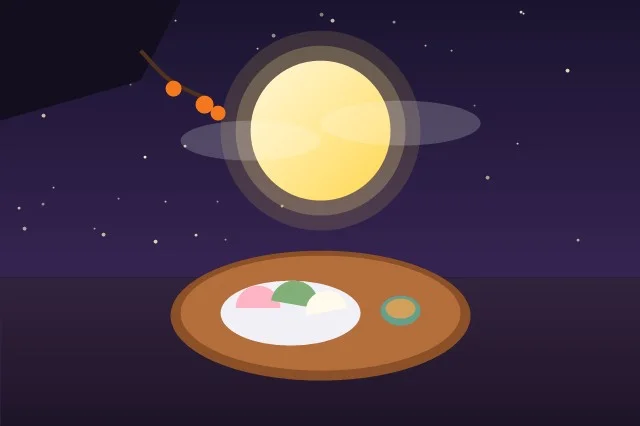

심리테스트 종류 완벽 총정리: 성격·연애·투사검사부터 전문 척도까지 목적별 가이드
수많은 심리테스트 중 지금 내게 가장 필요한 검사는 무엇일까요? 객관적 성격 검사, 무의식 투사 검사, 관계 역동 척도의 분류 체계와 올바른 활용법을 안내합니다.

현대인들에게 심리테스트는 단순한 킬링타임용 놀이를 넘어, 타인에게 자신을 소개하고 서로의 기질적 차이를 이해하는 가장 대중적인 '소통의 언어'로 자리 잡았습니다. 첫 만남에서 MBTI를 묻는 것이 자연스러워졌고, 연인 사이에서는 애착 유형과 사랑의 언어를 공유하며 갈등을 예방합니다.
하지만 심리검사는 그 측정 방식과 목적에 따라 학술적 깊이와 용도가 완전히 다릅니다. 나에게 꼭 맞는 검사를 선택할 수 있도록 심리학계에서 공인된 주요 심리테스트의 분류와 특징을 총정리해 드립니다.
1. 객관적 성격 검사 (Objective Personality Tests)
표준화된 질문지에 응답하여 점수화하는 검사로, 재검사 신뢰도와 타당도가 높은 것이 특징입니다.
- MBTI (Myers-Briggs Type Indicator): 칼 융의 심리유형론을 기반으로 16가지 성격 유형을 도출합니다. 일상 대화와 진로 적성, 커플 궁합 분석에 가장 널리 쓰입니다.
- 빅파이브 (Big 5 / FFM): 현대 학술 심리학계에서 가장 강력한 지지를 받는 성격 모델입니다. 외향성(E), 신경증(N), 성실성(C), 친화성(A), 개방성(O)의 5가지 연속선상에서 개인의 성격을 수치화하여 인간 행동을 매우 정확하게 예측합니다.
- 에니어그램 (Enneagram): 인간의 무의식적 두려움과 근원적 욕망에 따라 9가지 성격 유형으로 분류합니다. 자아 성찰과 영적 성숙, 내면의 그림자 치유에 탁월합니다.
- MMPI (미네소타 다면적 인성검사): 병원 및 전문 상담 기관에서 정신건강 상태(우울, 불안, 편집증 등)를 진단하기 위해 사용하는 전문 임상 척도입니다.
2. 관계 및 연애 전문 검사 (Relational Assessments)
혼자 있을 때의 성격이 아니라, '이성 및 애착 대상과 상호작용할 때 튀어나오는 무의식적 행동'을 측정합니다.
- 성인 애착유형 검사 (ECR-R): 유아기 양육자와의 관계에서 형성되어 성인기 연애에 결정적 영향을 미치는 4가지 애착 패턴(안정형, 불안형, 거부회피형, 공포회피형)을 진단합니다. 연애 갈등 해결의 필수 검사입니다.
- 5가지 사랑의 언어 (The 5 Love Languages): 게리 채프먼 박사가 정립한 이론으로, 인정하는 말, 함께하는 시간, 선물, 봉사, 스킨십 중 자신이 사랑받는다고 느끼는 제1의 언어를 찾아내어 오해를 방지합니다.
- 갈등 해결 스타일 척도 (TKI): 연인과 다툴 때 경쟁, 회피, 수용, 타협, 협력 중 어떤 방식을 주로 사용하는지 분석합니다.
3. 투사적 심리 검사 (Projective Tests)
구조화되지 않은 모호한 자극을 제시하여 방어기제를 우회하고 무의식 깊은 곳의 억압된 욕구와 콤플렉스를 끄집어냅니다.
- 로샤 검사 (Rorschach Inkblot): 좌우 대칭의 잉크 얼룩 카드를 보고 무엇처럼 보이는지 응답하여 무의식적 사고 구조와 정서적 역동을 분석합니다.
- HTP 검사 (집-나무-사람 검사): 백지에 집, 나무, 사람을 직접 그리게 하여 자아상, 가족 관계, 대인관계 태도를 심층 평가합니다.
- 문장완성검사 (SCT): "어릴 때 나는...", "나의 아버지는..." 등의 미완성 문장을 채우며 내면의 핵심 갈등을 파악합니다.
목적별 추천 심리테스트 선택 가이드
| 현재 나의 고민 | 추천 검사 종류 | 검사를 통해 얻을 수 있는 통찰 |
|---|---|---|
| 연인과 반복되는 다툼 | 성인 애착유형 검사, 사랑의 언어 | 상대방이 불안해하거나 회피하는 근본 원인을 파악하고 갈등 악순환의 고리를 끊음 |
| 진로 고민과 나의 강점 | Big 5 성격 검사, MBTI | 스트레스 취약도와 내향/외향성에 적합한 최적의 직무 환경과 업무 스타일 발견 |
| 깊은 고독감과 자아 성찰 | 에니어그램, HTP 투사검사 | 내면 깊숙이 자리 잡은 핵심 두려움을 마주하고 상처 입은 내면아이를 치유함 |
자주 묻는 질문 (FAQ)
Q. MBTI와 Big 5 중 어떤 것이 더 신뢰할 수 있나요?
학술 심리학 논문에서는 개인차를 범주(Type)로 나누지 않고 연속적인 스펙트럼으로 측정하는 Big 5가 더 신뢰받습니다. 하지만 일상 소통과 대중적 공감대 형성 측면에서는 MBTI가 직관적이고 실용적인 강점을 가집니다.
Q. 그림을 그리는 HTP 검사는 집에서 혼자 해도 정확한가요?
투사검사는 그림의 필압, 선의 위치, 지우개 사용 횟수 등 비언어적 과정을 임상심리 전문가가 종합 관찰해야 하므로 자가 진단에는 한계가 있습니다. 자가 진단으로는 표준화된 질문지 형태의 성격 검사가 훨씬 정확합니다.
Q. 테스트모음에서는 어떤 테스트들을 무료로 이용할 수 있나요?
테스트모음은 20문항 정밀 연애 유형 분석, 전통 만세력 기반 사주 궁합 및 운세, 힐링 컬러 성향 테스트 등 2030 세대의 자기 탐색과 관계 개선을 위한 다채로운 도구를 100% 무료로 제공합니다.
트렌디한 인기 심리테스트를 한곳에서 즐기려면?
연애, 성격, 사주, 감성 힐링까지 2030 세대를 위한 고품격 테스트 무료 모음 플랫폼